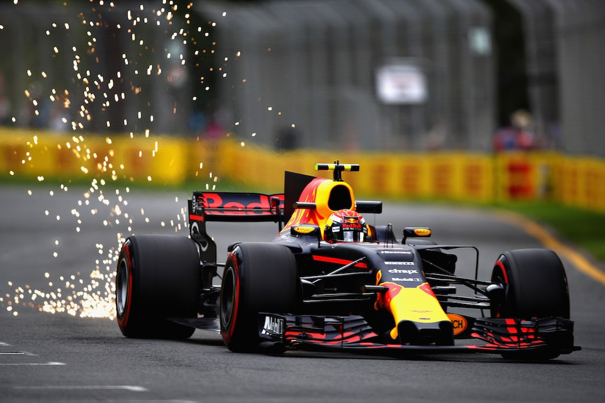

Formula 1«Формула-1» — высший класс гонок на автомобилях с открытыми колёсами |
|---|
История "Формулы 1"В далекие 1920-30-е годы появились первые предпосылки для появления «Формулы-1». Именно тогда команды, участвовавшие в различных автогоночных Гран-при, приняли регламент проведения первого чемпионата мира. Он должен был пройти в 1941 году, но не состоялся из-за начала Второй мировой войны. Только в 1946 году Международная автомобильная федерация (FIA) сформировала конечный регламент, который вступил в силу в 1947 году. Золотой век «Формулы-1» приходится на начало 1980-х годов. Появление топ-команд — Феррари, Макларен, Лотус и Уильямс, знаменитых пилотов А. Сенны, А. Проста, Г. Бергера только подогрел интерес болельщиков. В истории «Формулы-1» было всего пять женщин-пилотов, правда ни одной из них не удалось добиться значительных результатов. |
Меню |
Общая информацияПродам место на своей страничке под рекламу |


 |
|---|